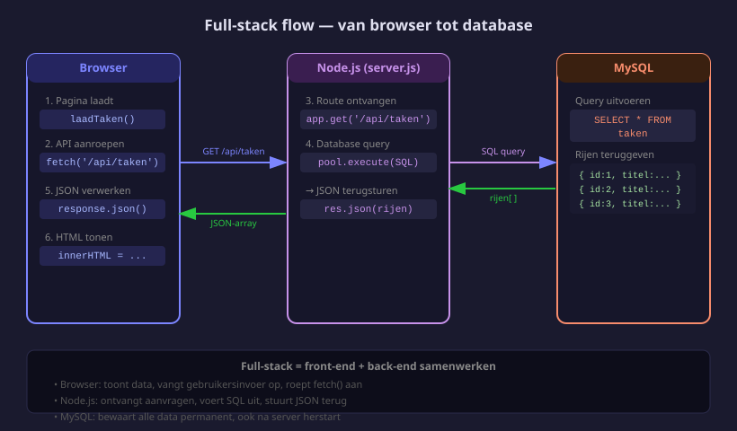
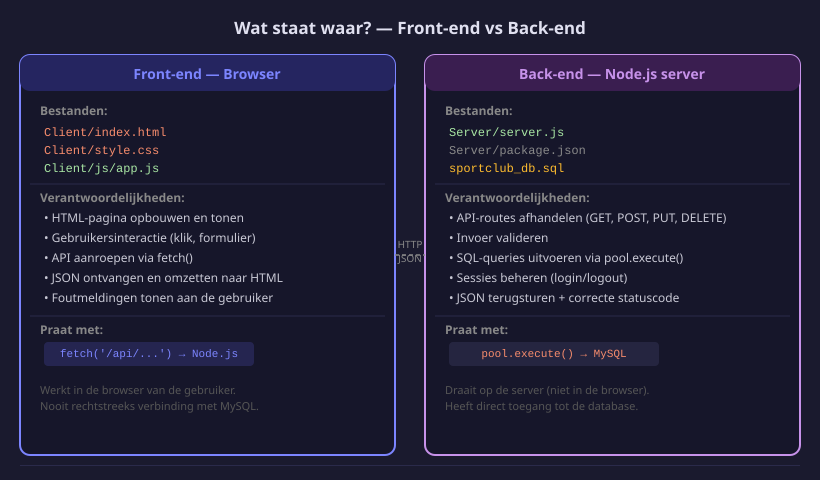

Front-end koppelen aan de API
- Uitleggen hoe front-end en back-end samenwerken in een full-stack applicatie
- Data uit de database tonen op een HTML-pagina via
fetch() - Een formulier in de browser verbinden met een POST-route in Node.js
- Omgaan met foutmeldingen die van de server terugkomen
- Het verschil tussen front-end code en back-end code duidelijk kunnen uitleggen
23.1 De volledige flow
In de vorige hoofdstukken heb je geleerd:
- H20: Een Node.js-server bouwen met Express
- H21: MySQL koppelen aan Node.js
- H22: Login en register ingebouwd
Nu combineer je alles: je schrijft de front-end JavaScript die de API aanroept en de resultaten toont op de pagina.

23.2 Data ophalen en tonen
Stap 1 — Route in server.js
// GET /api/taken — alle taken ophalen
app.get('/api/taken', async (req, res) => {
const [rijen] = await pool.execute('SELECT * FROM taken');
res.json(rijen);
});Stap 2 — Front-end JavaScript
// Client/js/app.js
async function laadTaken() {
const response = await fetch('/api/taken');
const taken = await response.json();
const lijst = document.getElementById('taken-lijst');
if (taken.length === 0) {
lijst.innerHTML = '<p>Geen taken gevonden.</p>';
return;
}
lijst.innerHTML = taken.map(taak => `
<div class="taak-kaart">
<h3>${taak.titel}</h3>
<p>${taak.voltooid ? '✓ Voltooid' : 'Nog te doen'}</p>
</div>
`).join('');
}
laadTaken();Stap 3 — HTML-pagina
<main>
<h2>Mijn taken</h2>
<div id="taken-lijst">Laden...</div>
</main>
<script type="module" src="js/app.js"></script>- Browser laadt de pagina →
laadTaken()wordt uitgevoerd fetch('/api/taken')stuurt een GET-verzoek naar Node.js- Node.js haalt de rijen op uit MySQL en stuurt ze terug als JSON
- JavaScript zet de JSON om naar HTML-kaartjes via
innerHTML
23.3 Data versturen via een formulier
Stap 1 — Route in server.js
// POST /api/taken — nieuwe taak toevoegen
app.post('/api/taken', async (req, res) => {
const { titel } = req.body;
if (!titel) {
return res.status(400).json({ fout: 'Titel is verplicht' });
}
const [resultaat] = await pool.execute(
'INSERT INTO taken (titel) VALUES (?)',
[titel]
);
res.status(201).json({ id: resultaat.insertId });
});Stap 2 — Formulier in HTML
<form id="taak-form">
<input type="text" id="taak-titel" placeholder="Nieuwe taak..." required>
<button type="submit">Toevoegen</button>
<p id="foutmelding" hidden style="color: red;"></p>
</form>Stap 3 — Formulier afhandelen in JavaScript
document.getElementById('taak-form').addEventListener('submit', async (e) => {
e.preventDefault(); // pagina NIET herladen
const titel = document.getElementById('taak-titel').value;
const response = await fetch('/api/taken', {
method: 'POST',
headers: { 'Content-Type': 'application/json' },
body: JSON.stringify({ titel })
});
const data = await response.json();
if (response.ok) {
document.getElementById('taak-titel').value = ''; // formulier leegmaken
laadTaken(); // lijst vernieuwen
} else {
const fout = document.getElementById('foutmelding');
fout.textContent = data.fout;
fout.hidden = false;
}
});23.4 Foutmeldingen van de server afhandelen
const response = await fetch('/api/taken', { /* ... */ });
const data = await response.json();
if (response.ok) {
// statuscode 200–299 → succes
console.log('Gelukt!');
} else {
// statuscode 400, 401, 403, 500 → fout
alert(data.fout);
}| Statuscode | Betekenis | Wanneer |
|---|---|---|
| 200 OK | Alles gelukt | GET geslaagd |
| 201 Created | Aangemaakt | POST geslaagd |
| 400 Bad Request | Verkeerde invoer | Verplicht veld ontbreekt |
| 401 Unauthorized | Niet ingelogd | Sessiecontrole mislukt |
| 403 Forbidden | Geen rechten | Geen admin-rol |
| 500 Server Error | Serverfout | Database-crash |
23.5 Wat gaat waar?

| Front-end (browser) | Back-end (Node.js) | |
|---|---|---|
| Bestand | Client/js/*.js | Server/server.js |
| Taak | Tonen, klikken, invoeren | Ontvangen, verwerken, opslaan |
| Praat met | Node.js via fetch() | MySQL via pool.execute() |
| Data-formaat | JSON ontvangen | JSON terugsturen |
Je beheerst nu de volledige full-stack cyclus. In de GIP-cursus pas je alles toe op het Sportclub Ledenportaal. Start via het menu met de GIP-cursus.
- MDN Fetch API — officiële fetch() documentatie
- MDN async/await — async functies in JavaScript
- public-apis.io — overzicht van gratis publieke API's voor experimenten
- httpstatuses.com — overzicht van alle HTTP-statuscodes en hun betekenis
Oefeningen
Je hebt al een notities_db database uit H21. Maak nu ook een HTML-pagina die alle notities toont.
- Maak
Client/notities.htmlaan met een<div id="notities-lijst"> - Maak
Client/js/notities.jsaan met eenlaadNotities()functie - Roep
fetch('/api/notities')aan en toon deinhoudvan elke notitie als<p>
Verwacht resultaat: Browser toont alle notities uit de database op de pagina.
Voeg een formulier toe aan notities.html waarmee je een nieuwe notitie kan toevoegen.
- Voeg een
<form>toe met een<textarea>voor de inhoud - Bij submit: stuur een POST naar
/api/notitiesmet{ inhoud: ... }in de body - Na succes: formulier leegmaken +
laadNotities()opnieuw aanroepen
Verwacht resultaat: Nieuwe notitie verschijnt direct in de lijst na indienen.
Huistaak
Opdracht: recepten-app afwerken
Bouw verder op de recepten-database uit H21 en voeg een volledige HTML-front-end toe.
Deel 1 — Data tonen (4 punten)
- Maak
Client/index.htmlmet een sectie voor recepten - Bij het laden: haal alle recepten op via
GET /api/recepten - Toon elk recept als een kaartje met naam en bereidingstijd
- Als er geen recepten zijn: toon een melding “Nog geen recepten.”
Deel 2 — Formulier (4 punten)
- Voeg een formulier toe met velden voor naam en bereidingstijd
- Bij submit: stuur een POST naar
/api/recepten - Na succes: formulier leegmaken en de lijst vernieuwen
- Bij fout: toon de foutmelding van de server
Deel 3 — Indiening (2 punten)
- Lever
Server/(zondernode_modules/) +Client/in - Voeg het
.sql-bestand toe
Deel 4 — Alternatieven voor fetch() (2 punten)
fetch() is de ingebouwde manier om HTTP-verzoeken te doen in de browser. Er zijn ook externe libraries die hetzelfde doen maar met extra functies. Zoek op:
- Wat is Axios? Zoek het op npmjs.com. Wat zijn 2 voordelen van Axios tegenover de ingebouwde
fetch()? - Schrijf dezelfde GET-request naar
/api/receptenzowel metfetch()als met Axios (gebruik de Axios-documentatie). Toon beide versies naast elkaar als code-block in een.js-bestand.
Vragenlijst
Controleer of je de leerstof van dit hoofdstuk begrijpt.
Welke JavaScript-functie gebruik je in de browser om een API-route aan te roepen?
Waarom roep je e.preventDefault() aan bij het submit-event van een formulier?
Welke header moet je meesturen bij een POST-verzoek met JSON-data?
Hoe controleer je in de front-end of een fetch-verzoek gelukt is?
Wat is de rol van pool.execute() in de full-stack flow?